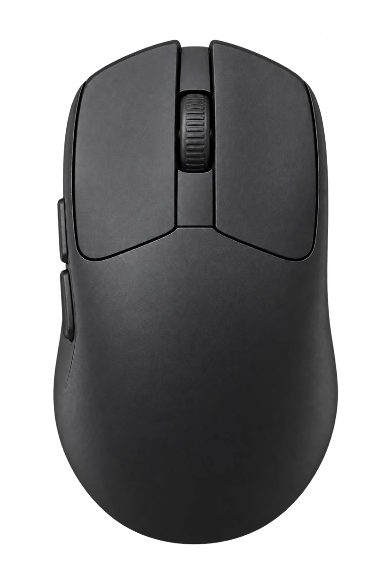
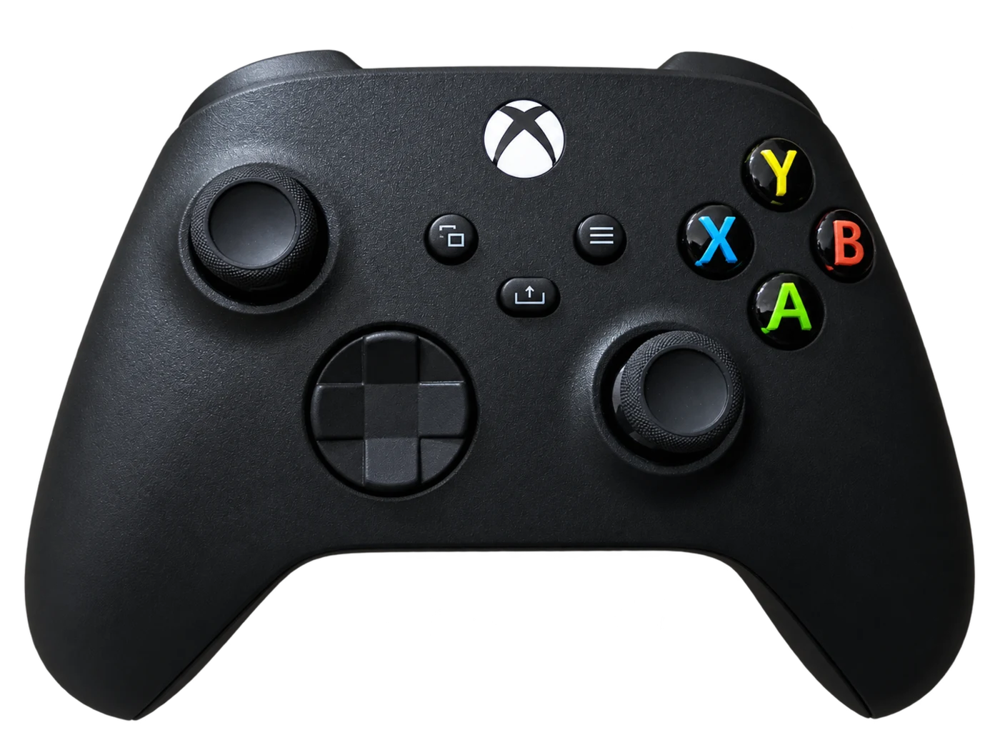

0.2.0 PREVIEW · ВАШИ ДАННЫЕ ОСТАЮТСЯ ЗДЕСЬ
Результаты рядом.
Картина яснее.
Соберите проверки мыши, геймпада и телефона в одном месте. Откройте отчёты до и после ремонта, сопоставьте условия и сохраните результат.
Открыть отчётыJSON обрабатывается в браузере. Автоматического аппаратного диагноза нет.

В БРАУЗЕРЕ
Mouse Tester
Кнопки, удержание, колесо и события движения.

В БРАУЗЕРЕ
Gamepad Tester
DualSense, Xbox, Joy-Con и доступные значения Gamepad API.
ANDROID · APK PREVIEW
PhoneCheck
Восемь проверок при приёмке и наблюдения мастера.
Для импорта используйте JSON из Mouse Tester, PhoneCheck и Android-тестеров DualSense, Xbox, Joy-Con.
СРАВНЕНИЕ
До и после
Откройте один или два отчёта schema 1, до 1 МБ каждый.
После
В ЭТОМ БРАУЗЕРЕ
История проверок
До 20 отчётов · общий предел 3 МБ